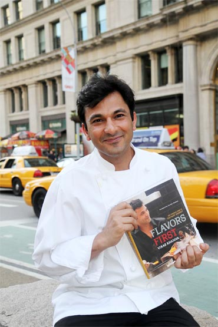
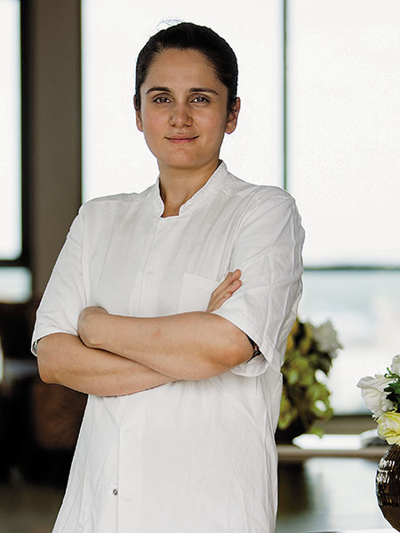
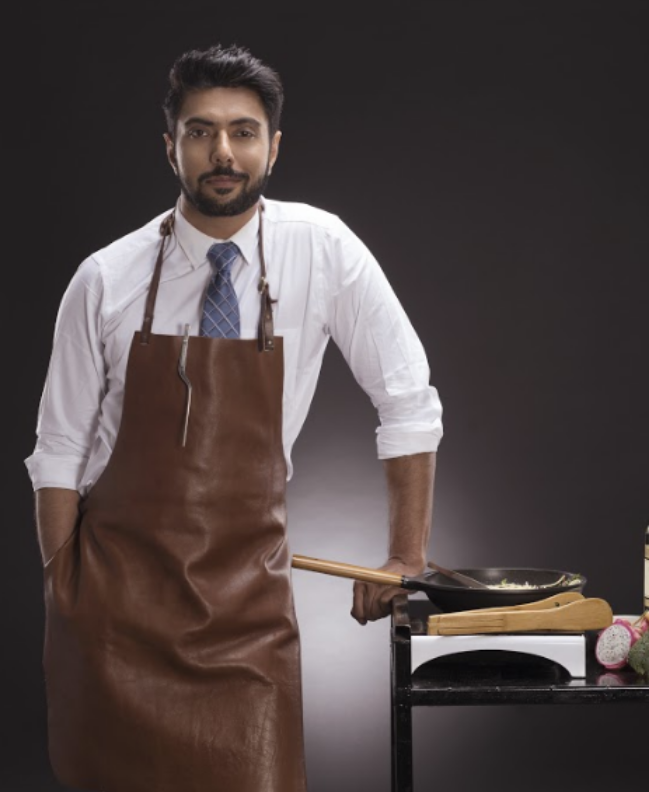

Chef is the star of the restaurant, so it can attract more customers, but if you are unsuccessful with choosing, your business might be ruined. The chef cook is the person, who organizes all the work in the restaurant kitchen, and he is also the link between the owner of the restaurant and the rest of the employees.

Khanna was born in Amritsar, India, to Davinder and Bindu Khanna. His mother still lives there. He did his schooling at St. Francis School, Amritsar. He was born with a leg deformity (club foot) and wasn't able to run until he was 13 years old. He was inspired by his Biji (grandmother) who loved to cook, and her kitchen became a part of his foundational training.
Khanna had worked at Salaam Bombay and The Café at the Rubin Museum of Art in New York before he joined Junoon, an upscale Indian restaurant in Flatiron district of Manhattan. Junoon received a favorable review from Sam Sifton in The New York Times in its inaugural year and was awarded a Michelin star by the Michelin Guide for six consecutive years since 2011.
From 2011, Khanna hosted five seasons of MasterChef India (2, 3, 4, 5 and 6) a series based on the original British version. He has been hosting all the seasons of the show since then. Khanna was invited as a guest judge on MasterChef Australia in Season 6.
He has hosted four seasons of the show Twist of Taste on Fox Life.
Khanna was featured as a Consultant chef to help a failing Indian restaurant named Purnima on the Gordon Ramsay TV series Kitchen Nightmares.
Khanna appeared as a judge and an Indian-cuisine specialist on the two-part season finale of Hell's Kitchen.
He has appeared on Throwdown! with Bobby Flay[11] as a judge and as a guest chef on The Martha Stewart Show.

Arora grew up in Mumbai, and is of Punjabi Arora heritage. She initially pursued a career in journalism before becoming a chef.
In 2008, she left for France. She studied at Le Cordon Bleu in Paris and graduated in 2010. She worked with Chef Gaggan Anand , Gordon Ramsay and René RCopenhagen before opening her own restaurant, Gaa, in Bangkok in April 2017. Gaa is a three-storey restaurant that celebrates a modern tasting menu using traditional Indian techniques.
In November 2018, she and her restaurant were awarded a Michelin star, with Arora being the first female Indian chef to receive the distinction. In March 2019, Restaurant Gaa made its debut on the Asia's 50 Best Restaurants list at No. 16, claiming the Highest New Entry Award.
In February 2019, Arora was named Asia's Best Female Chef for the year by World's 50 Best Restaurants.
In June 2019, Restaurant Gaa made its debut on the World's 50 Best Restaurants list at No. 95.
In August 2019, Arora launched Food Forward India, an initiative prioritizing the future of Indian food. The inaugural event, which took place in Mumbai on 17 October, 2019, brought together Mumbai's brightest minds in the Indian food community to engage in a day filled with talks, food tastings and panel discussions. She is one of the judges in Master chef India. (2023)

Ranveer Singh Brar (born 8 February 1978) is a Lucknow-born and bred Indian celebrity chef, Masterchef India judge, author and restaurateur. He is well known as the host of popular Television food shows and as a judge in three seasons (four, six and seven) of MasterChef India, alongside fellow chefs Sanjeev Kapoor (Season 4),Vikas Khanna (both seasons),Vineet Bhatia (Season 6) & Garima Arora (Season 7) .
Brar designed a menu for the MTV India chain of restaurants, launched by Viacom 18 consumer products wing. FLYP @ MTV, the first restaurant opened in Delhi in mid-December 2015, with the next launch in Chandigarh, and the third instalment in Mumbai fall of 2017.
He created and launched an 'artisan' line of meal kits in association with Haute Chef in December 2015.
He also launched a premium patisserie called English Vinglish in Mumbai in spring 2016 featuring fusion Indian desserts, breads and bakes.
He opened an all-vegetarian fine-dining restaurant in Mumbai in Dec 2016 called TAG Gourmart Kitchen by Ranveer Brar, as well as the restaurant Mayura (now closed) in the Greater Toronto Area, Canada in 2017.
Brar was responsible for the F&B conceptualization for the restaurants at the heritage property Alila at Bishangarh by Alila Hotels and Resorts.
Copyright © OK!! and Cafe